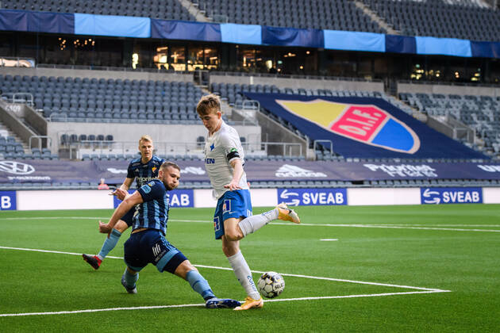

FCK-talent slår landsholdsrekord
Skrevet af Fodboldbanen 23. okt. 2021
En fodboldkamp mellem Island og Armenien lyder sjældent som noget der bliver et taleemne i de danske stuer. Men hos FC København er der alligevel en væsentlig ting at tage med fra opgøret.

Slår en gammel familierekord oveni
Det nyskrevne FCK-talent Isak Bergmann Johanneson var netop ansvarlig for sit første landholdsmål i opgøret der endte 1-1. Det gør ham dermed til Islands yngste målscorer nogensinde med blot en alder på 18 år, 6 måneder og 15 dage. Faktisk var den forrige rekordholder talentets egen Onkel, Bjarni Gudjonsson, som har holdt rekorden i over 20 år.
”Det er sjovt, jeg vidste at jeg skulle slå rekorden den senest til september for at kunne have nået det før min onkel. Vi havde faktisk et væddemål kørende om hvor vidt og hvorledes jeg ville nå det” udtaler Isak Bergmann Johannesson selv til Foldboldbanen.
Dog ser det ikke lovende ud for Islands chancer for at komme med til VM 2022. Holdet ligger på en 5. plads i deres pulje med blot 5 point.
Gruppen toppes af Tyskland som på nuværende tidspunkt allerede har sikret sig kvalifikation, som det første hold i turneringens puljer.
Hvem er Isak Bergmann Johanneson?
Den unge mand der i 2020 blev rygtet til storklubber som Liverpool, Real Madrid, Manchester United og andre store adresser, blev dog til en lidt mere beskeden hovedstad i Danmark. Dog lyder det på begge sider af handlen som om at de begge ser det som det rigtige valg.
”Vi ønsker at hjælpe Isak så godt på vej som muligt, med sin lange karriere. Hos os har han mulighed for at få udviklet sit potentiale, samt at få kamperfaring på et højt niveau”. Lyder det Jes Thorup, Træner for København.
Isak Bergmann Johannesson bekræfter også selv denne udtalelse i et interview tidligere på ugen.
”Det har alt sammen været meget overvældende. De sidste par år har min agent haft mange store hold i røret, mange som jeg har set som en drøm at spille i. Med det sagt synes jeg det er for tidligt i min karriere for at tage sådan et stort skridt. Jeg har meget at lære endnu.” udtaler Isak selv.
Statistik for Isak i København - Hvordan går det?
Isak Bermann Johannesson står kvitteret for 1 mål og 1 assist på blot 4 kampe for København. På det islandske landshold står han nu kvitteret for 2 mål på 5 kampe, som alle har været under kvalifikation til VM. Det er alle mål som nu udgør hans ”per 90” til at ligge på ca. 40 min. Selv med en snæver dokumentation, er det mere en lovende for talentet at tage med videre.
Isaks forventede mål- og assistrate (XG & XA) ligger på 0.65 samlet, når han er på banen. Det er på samme niveau som mange topspillere fra naboligaer som Premier League og La Liga, hvor de tidligere interesserede klubber befinder sig
”Når tiden er inde til at læge mere tillid til Isak, så er vi ikke nervøse for at han nok skal bære det ansvar. Han er i stand til at blive en rigtig god spiller, men vi tager det en dag ad gangen.” Udtaler Jes Thorup.
Se Isak Bergmann Johannesson i aktion for FC København mod Horsens søndag d. 31. oktober.